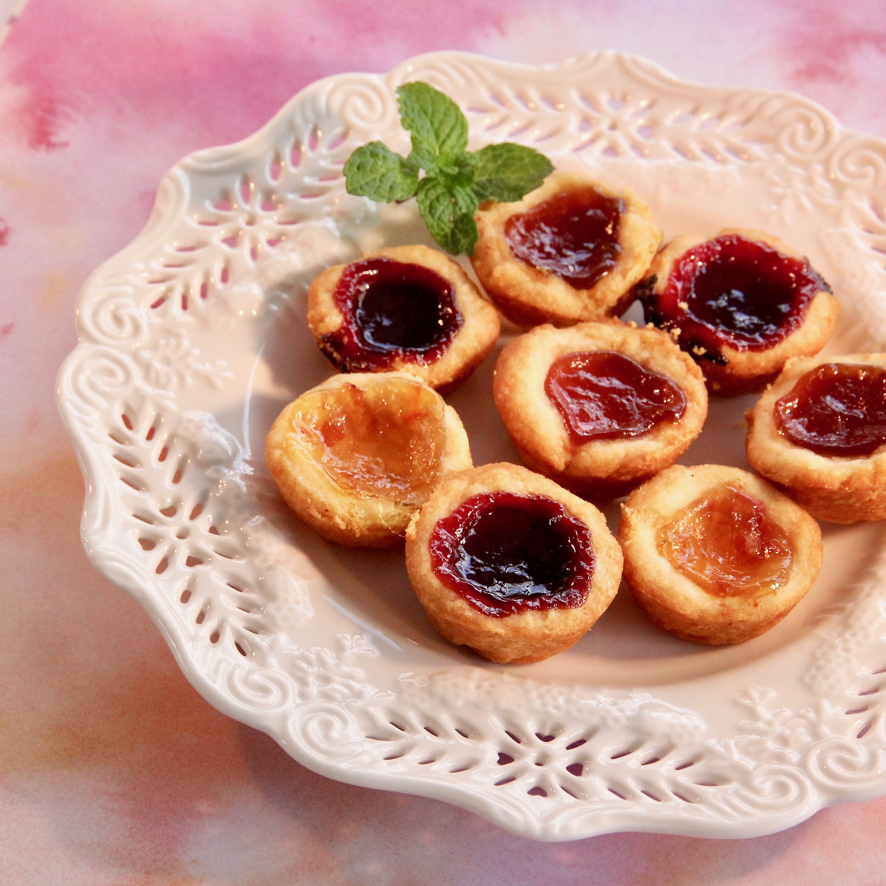

Home
Jam

Description
These are so simple to make that my 3-year-old daughter did most of the work. Make sure not to roll the pastry too thin, and don't put too much jam in.
Ingredients
- 2 cups all-purpose flour
- 1 cup shortening
- 3 teaspoons white sugar
- 1 teaspoon salt
- ½ cup water
- 1 cup jam
Directions
- Mix flour, shortening, sugar, and salt together in a food processor until mixture resembles coarse crumbs. Add water and mix until a ball is formed. Refrigerate pastry until well chilled, at least 30 minutes.
- Preheat the oven to 400 degrees F (200 degrees C). Grease 24 shallow muffin cups.
- Roll pastry out thin; cut into rounds with a cookie cutter. Place each round in a muffin cup. Add 2 teaspoons of jam to each cup.
- Bake in the preheated oven until golden brown, about 20 minutes. Cool tarts on a wire rack.